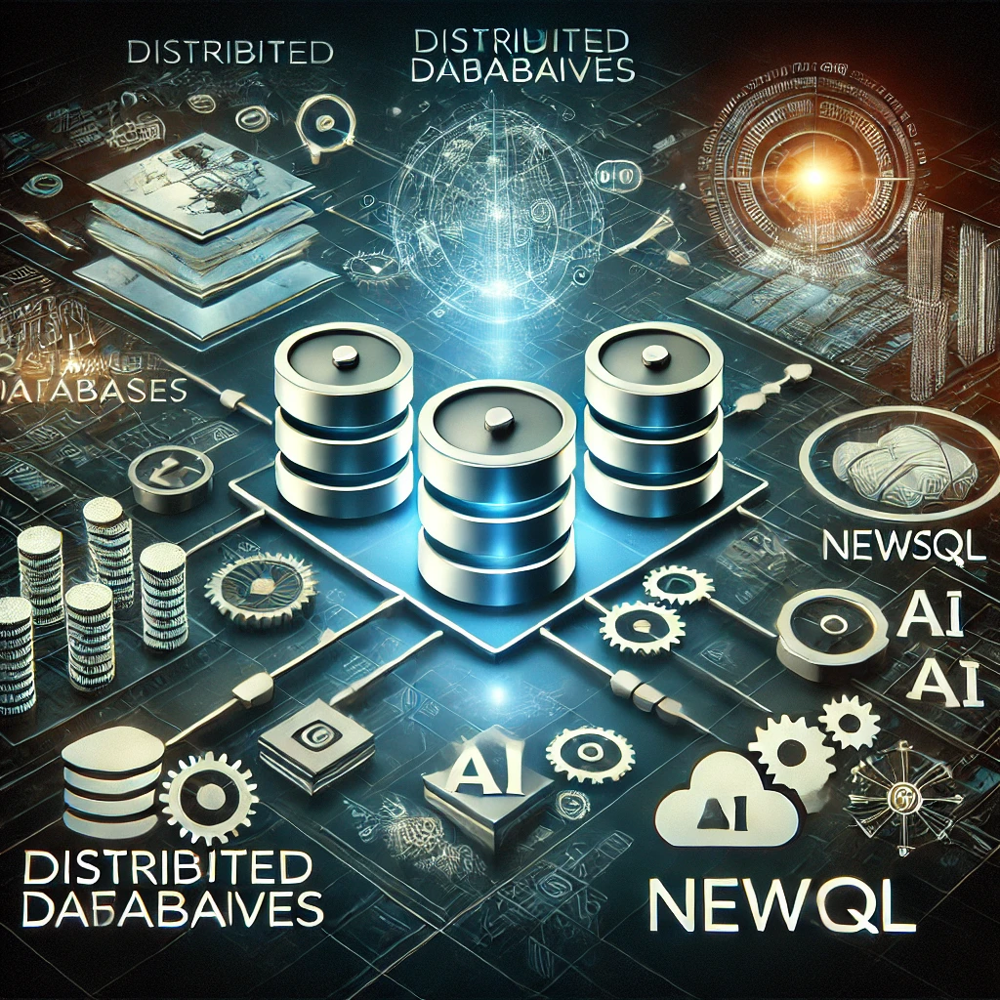

El desarrollo backend está avanzando rápidamente hacia arquitecturas sin servidor, que permiten a los desarrolladores centrarse únicamente en el código, sin preocuparse por la infraestructura. Esto mejora la escalabilidad y reduce costos. Al mismo tiempo, la inteligencia artificial y el machine learning se están integrando en los sistemas backend para ofrecer experiencias personalizadas y optimizar el manejo de datos. Además, tecnologías como GraphQL están optimizando las consultas de datos, mientras que la seguridad se vuelve cada vez más prioritaria para combatir las crecientes amenazas cibernéticas( getwidget )( daily.dev ).
En el ámbito del frontend, las Aplicaciones Web Progresivas (PWAs) están en auge, permitiendo experiencias de usuario similares a las apps nativas directamente en los navegadores, con acceso sin conexión y notificaciones push. Además, WebAssembly está permitiendo que los desarrolladores ejecuten tareas computacionales complejas en el navegador con un rendimiento casi nativo, lo que mejora significativamente la experiencia de usuario en aplicaciones web. Estas tecnologías están eliminando la necesidad de desarrollar aplicaciones separadas para diferentes plataformas, lo que simplifica el trabajo de los desarrolladores( Bestarion).
En cuanto a bases de datos, las bases de datos distribuidas y sin servidor están transformando el almacenamiento y manejo de datos en aplicaciones modernas, brindando escalabilidad y fiabilidad. Los avances en bases de datos NewSQL y las bases de datos potenciadas por IA están ayudando a automatizar el procesamiento de grandes volúmenes de información y optimizar las consultas para análisis en tiempo real, impulsando la eficiencia y precisión en la gestión de datos( daily.dev ).
En el ámbito de la computación en la nube, edge computing está ganando relevancia al permitir que los datos se procesen más cerca de donde se generan, lo que reduce la latencia y mejora el rendimiento de las aplicaciones en tiempo real. Junto a esto, herramientas como Kubernetes están liderando la gestión de contenedores, lo que permite organizar y orquestar aplicaciones distribuidas de manera eficiente y escalable. Estas tecnologías están impulsando una nube más rápida, fiable y adaptada a las necesidades actuales( Bestarion )( DEV Community ).